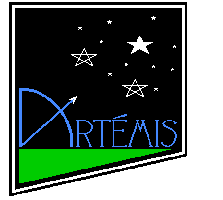
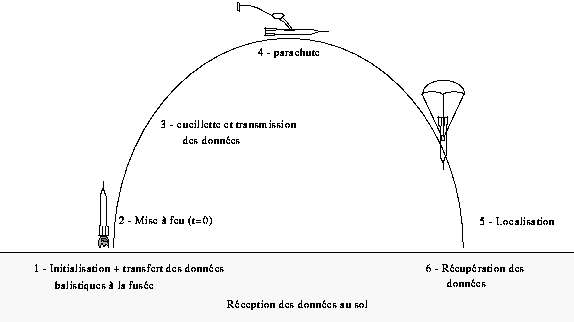
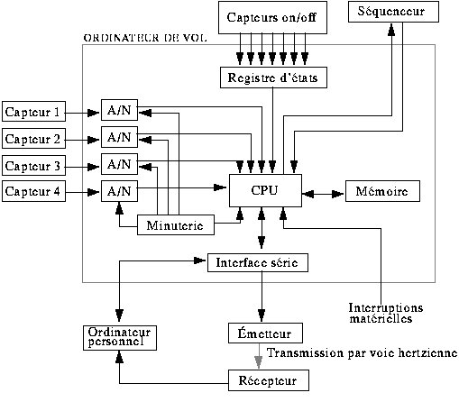
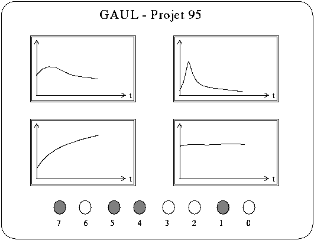

Figure 1 - Artémis : Divinité grecque de la nature sauvage et de la chasse, il tue le chasseur géant Orion et le change en constellation.
La fusée Artémis est la suite immédiate à Orion. D'ailleurs, elle a à peu près le même gabarit que cette dernière, mais avec une multitude d'améliorations apportées à tous les niveaux. Elle a plusieurs tâches: déployer par elle-même son parachute lorsqu'elle est rendue à son point de culmination, cueillir des données physiques au cours de son envolée, les emmagasiner en mémoire, les transmettre au sol par voie hertzienne afin de les visualiser en temps réel et les retransmettre directement à un ordinateur personnel lors de la récupération de la fusée. Sur la figure 2, nous illustrons les différentes phases de la fusée lors de son vol.

1. La structure mécanique
La structure mécanique de la fusée expérimentale est divisée en quatre blocs, chacun ayant un rôle spécifique à jouer. Le premier bloc est composé principalement du moteur et le second contient les éléments nécessaires à la récupération de la fusée. Le troisième niveau est l'endroit où se situe l'électronique de base. C'est ce bloc qui veille au bon déroulement des expériences et de la récupération. Finalement, le quatrième niveau contient les éléments de la télémesure. Ainsi, la configuration de la fusée se divise en quatre blocs distincts. Chaque bloc est divisé par un joint inter-bloc qui lui est propre.
La structure interne, que l'on appelle aussi la porteuse, sera composée de deux poutres centrales reliant les joints inter-blocs entre eux. Ces pièces sont faites en aluminium. Toute cette structure interne est enveloppée par un fuselage composé soit d'aluminium, ou de fibre de carbone. Pour faciliter l'accès à l'instrumentation interne de la fusée, le fuselage est divisé en demi-cylindres pouvant être retirés lorsque nécessaire.
1.1 Bloc moteur
Ce bloc a une configuration bien particulière. En effet, ce niveau, composé du moteur et du carburant, a un diamètre inférieur au reste de la fusée. Cette partie, que l'on appelle bloc moteur, est insérée dans le joint inter-bloc ou le "joint moteur". Pour conserver la structure aérodynamique de la fusée, le bloc moteur est recouvert d'un cylindre qui est le prolongement du fuselage des blocs supérieurs. C'est à ce niveau que seront fixés les ailerons servant à stabiliser la fusée au cours du vol.
Le moteur utilisé est alimenté au propergol solide. Pour des raisons d'autorisation de vol, le GAUL utilisera un moteur professionnel pour propulser la fusée. Il s'agit d'un moteur français utilisé lors des campagnes de lancement françaises. Ce moteur, de type Chamois, est fourni par le CNES. C'est effectivement ce moteur qui a été utilisé l'année dernière par le GAUL lors du lancement de sa première fusée, Orion.
Les propriétés caractéristiques physiques de ce moteur sont illustrées au tableau 1.
| Masse : | 4,1 kg |
| Longueur : | 315 mm |
| Diamètre : | 90 mm |
| Temps de combustion : | 2,8 sec |
| Poussée maximale : | 1025 N |
| Poussée moyenne : | 842 N |
| Impulsion totale | 2043 Ns |
Tableau 1: Caractéristiques du propulseur Chamois
1.2 Conception d'un moteur
Jusqu'à maintenant, la seule possibilité de lancement est lors des campagnes annuelles organisées en France. Pour ces occasions, le CNES fournit les propulseurs aux clubs français et parfois aux clubs étrangers. Afin de faciliter l'accessibilité de cette activité aux jeunes Canadiens, l'ARDAA envisage l'organisation de campagnes de lancement au Québec où seront lancées des fusées expérimentales. Cependant, la manipulation du type de moteur utilisé lors de ces lancements est régie par des lois fédérales. Des discussions sont en cours du côté de l'ARDAA afin d'obtenir les autorisations nécessaires. Dans l'optique d'une réponse favorable et vu les problèmes que cause l'importation des moteurs français (coûts, sécurité, disponibilité), nous avons pensé qu'il serait plus utile et intéressant d'avoir accès à un propulseur local pour ce genre d'événement. C'est pourquoi le GAUL a décidé cette année de débuter la conception et la fabrication d'un moteur qui pourra être utilisé pour propulser des fusées expérimentale. Celui-ci devra répondre à nos attente et nos exigences en matière de performance. Pour ce faire, nous avons été mis en contact par l'intermédiaire de M. DeChamplain, professeur à l'Université Laval, avec le CRDV (Centre de Recherche pour la Défense de Valcartier). Le personnel du centre nous a permis de mettre sur pied ce projet en nous assurant une aide technique et matérielle (ingénieurs, techniciens, logiciel de conception, banc d'essai, etc).
1.3 Bloc récupération
La fonction principale de ce second bloc est la récupération de la fusée. C'est dans cette section que sont situés le parachute de récupération et les piles d'alimentation électrique de la fusée. L'éjection du parachute se fait par une porte latérale. Le système d'éjection est assez simple: environ seize secondes après l'allumage du moteur, lorsque la fusée est au sommet de sa courbe, l'ordinateur de vol envoie un signal à une goupille pyrotechnique qui commande l'ouverture de la porte latérale. À cet instant, le parachute est déployé.
1.4 Bloc électronique
C'est à ce niveau que l'on trouve les principales composantes électroniques. Les plaquettes, sur lesquelles sont montés le micro-contrôleur et les capteurs, sont vissées de part et d'autre de la poutre centrale. De plus, les instruments nécessaires aux expériences faites en cours de vol (mesure de l'altitude par un capteur de pression et de la vitesse atteinte à l'aide d'un tube de pitot) sont installés dans ce bloc. Le panneau de contrôle de l'instrumentation électronique est placé sur l'un des côtés de la poutre. Une porte située sur la paroi extérieure de la fusée donne accès à ce panneau de contrôle. Pour permettre la communication entre les blocs, des orifices sont créés dans les joints inter-blocs afin de pouvoir passer les câbles.
1.5 Bloc télémesure
Étant le sommet de la fusée, le quatrième bloc a une forme géométrique particulière. À ce niveau, il n'y a pas de structure centrale et le fuselage est en forme de pointe. Puisqu'il n'est pas prévisible que la fusée dépasse le mur du son, la pointe de la fusée ne nécessite pas une configuration spéciale. Cette pointe sera tout simplement de forme ogivale. Pour des raisons de télémétrie, le fuselage du quatrième bloc n'est pas métallique. C'est pour cette raison que le sommet est fait de fibre de verre. Ainsi, on y installe les instruments de télémesure. De plus, des orifices sont percés dans le fuselage. Un premier sert pour l'antenne d'émission et est situé sur le bout de la pointe. Un collier spécial sera placé à cet endroit afin de bien stabiliser l'antenne. Le second orifice est situé le long de la paroi. Il laisse passer un capteur de pression servant à mesurer la vitesse de la fusée. Quelques données techniques sur la fusée sont présentées dans le tableau 2
| Masse : | 10 kg |
| Longueur : | 165 cm |
| Diamètre : | 10 cm |
| Vitesse Maximale : | 195 m/s |
| Vitesse moyenne : | 85 m/s |
| Accélération maximale : | 90 m/s^2 |
| Altitude maximale | 1400 m |
| Temps pour altitude maximale : | 16,0 sec |
| Vitesse de descente après l'ouverture du parachute | 10 m/s |
Tableau 2: Données techniques (théorique) de la fusée
2. L'électronique
Maintenant que la visualisation de chaque bloc de la fusée est faite, nous pouvons attaquer la partie de l'électronique d'Artémis. L'électronique est présente à plusieurs niveaux. Ses principaux modules sont: l'ordinateur de vol, l'émetteur, les capteurs et le séquenceur. Le bloc diagramme de l'électronique est présenté à la . Il permet de visualiser tous les liens existant entre les différents modules.

Figure 3 -Bloc diagramme de l'électronique
2.1 L'ordinateur de vol
L'ordinateur de vol est le module électronique qui gère et dirige les opérations tout au long de son périple, dans les airs comme au sol. Il a la responsabilité de prendre les acquisitions des différents capteurs, de les emmagasiner dans une mémoire et de les relayer à l'émetteur. Aussi, l'ordinateur de vol prend en note, à chaque acquisition, la phase de vol de la fusée et son état, à partir de petits senseurs on/off. Ceci est fait afin qu'on puisse interpréter les changements brusques des données. De plus, il assure l'ouverture du parachute au bon moment et synchronise le déclenchement de l'appareil photo. Au sol, avant et après le vol, il sert d'interface entre les mémoires de bord et l'ordinateur personnel. Afin de réaliser toutes ces fonctions et de minimiser la circuiterie, le choix du micro-contrôleur s'est arrêté sur le MC68HC11 de Motorola. Cette famille a l'avantage de contenir déjà huit convertisseurs analogique-numérique (A/N), un interface de communication série asynchrone et une minuterie interne. Cela nous permet d'économiser temps, argent et espace. Dans la section précédente, nous avons vu que le diamètre de la fusée était de 10 cm, ce qui restreint à une largeur de plaque de 6,35 cm par environ 25 cm de longueur. Il est donc important de minimiser le nombre de composantes électroniques sur la plaque du circuit imprimé. Le micro-contrôleur est programmé, lors de son vol, pour prendre une acquisition des différents capteurs (et des senseurs) à tous les 10 ms. Il se sert de ses convertisseurs A/N intégrés afin de convertir le signal analogique, fourni par le capteur, en une donnée numérisée sur 8 bits. Ensuite, le MC68HC11 se charge de la transférer à l'émetteur par le biais du port série et à la mémoire externe, en vue de la récupérer à la fin de l'expérience. En plus de la mémoire externe sur la carte, une seconde mémoire coulée dans le Plexiglass est branchée sur la carte afin de jouer le rôle d'une "boîte noire". C'est à l'aide de la minuterie interne du micro-contrôleur que tous les événements qui requièrent un contrôle sur le temps se concrétisent. L'acquisition des données et l'ouverture du parachute sont les événements contrôlés par la minuterie. Le compteur interne est comparé à chaque coup d'horloge à tous les registres de comparaison. Lorsqu'il est égal à l'un de ces registres, la minuterie génère une interruption et le micro-contrôleur saute à la routine correspondante. C'est ainsi que l'on traite tous ces événements. Enfin, la dernière fonction du MC68HC11, et tout aussi importante, est de servir d'interface avec un ordinateur personnel. Il utilise son port série asynchrone pour communiquer avec celui du PC. Il s'en sert avant l'expérience afin de recevoir des données d'initialisation, dont celle qui comprend le temps que prendra la fusée avant d'atteindre le sommet de sa trajectoire. Il est utilisé pour ouvrir le parachute. Lors du vol, l'ordinateur de vol se sert aussi de son port série afin de relayer les données à l'émetteur. À la fin de l'expérience, la communication est de nouveau rétablie afin de récupérer les données emmagasinées dans la mémoire. La vitesse de transmission série est réglée à 9600 bits par seconde lorsqu'il y a communication au sol et de 4800 bits à la secondes lors du vol. Cette dernière vitesse est restreinte due à la bande passante du récepteur.
2.2 Séquenceur
Le séquenceur est un petit dispositif dans la fusée qui sert de minuterie de secours pour l'ouverture du parachute. C'est lui qui détecte le décollage de la fusée et qui commande l'ampli de puissance qui fait sauter l'inflammateur, nécessaire à l'éjection de la porte retenant le parachute. Étant un élément essentiel d'une fusée, le séquenceur est régie par des règles très strictes qui sont essentiellement liées à l'isolement électrique, l'autonomie et la puissance. En premier lieu, la première règle imposée au séquenceur est de posséder une alimentation indépendante et d'être isolé électriquement de tous les autres modules s'y rapportant. Les deuxième et troisième règles consistent à posséder une autonomie de 25 minutes et d'avoir la puissance nécessaire pour le déclenchement du mécanisme d'éjection. Enfin, la dernière règle, et la plus importante, concerne le déclenchement externe (ordinateur de vol) du mécanisme. Ce dernier doit être géré par une fenêtre temporelle comme celle illustrée à la figure 4. Le temps zéro correspond au temps du décollage. Avant le temps T1, le séquenceur interdit tout signal externe de faire ouvrir le parachute. Entre T1 et T2, celui-ci donne l'autorisation, et à T2, il force la commande.

Figure 4 - Diagramme de la fenêtre temporelle du séquenceur
2.3 Télémesure
A) L'émetteur
L'émetteur est la partie électronique permettant de transmettre, par voie hertzienne, les données recueillies au récepteur se trouvant au sol. Ainsi, si par malchance un problème électrique survenait au niveau de la mémoire, aucune donnée ne serait perdue. L'émetteur reçoit son signal du micro-contrôleur, le module en fréquence, et l'envoie dans l'air au moyen de l'antenne. Le signal à l'entrée de l'émetteur est un signal série, c'est à dire une série de 1 et de 0. Utilisant la modulation FSK, il n'a qu'à convertir les zéros en une fréquence f1, et les uns, en une autre fréquence f2. La plage de fréquence allouée est située aux alentours de 136,5 MHz et la puissance minimale requise sera de 0,3 watt. Au sol, le récepteur capte le signal modulé et le retransforme en un signal série. La sortie est branchée au port série de l'ordinateur personnel. Ainsi, le groupe émetteur-air-récepteur ne simule en fait qu'un câble série. Les données seront recueillies et affichées en temps réel (avec un délai de transmission) sur le moniteur de l'ordinateur.
B) Le récepteur
Notre objectif relié à la télémesure cette année est la conception de notre propre émetteur. Cependant, puisqu'il est entièrement repensé, notre transmetteur se voit être incompatible au récepteur fournit par l'ANSTJ. Toutefois, avec le support de personnes ressources très intéressées par le projet, un récepteur devrait être aussi réalisé. Sinon, nous envisageons aussi la possibilité d'emprunter un récepteur à un futur partenaire.
3. Les expériences
Nous ne pouvons pas parler d'une fusée expérimentale sans ses expériences à bord. Pour Artémis, elles sont la mesure de vitesse, la mesure d'altitude et la détection d'état de la fusée. La mesure de vitesse et la mesure d'altitude sont effectuées à l'aide de capteurs de pression de type tube de pitot. La vitesse est calculée à partir d'une pression dynamique alors que l'altitude dérive d'une pression statique. Dans chaque cas, le signal fournit par les différents capteurs devra passer par un ampli différentiel, puis être filtré, pour ensuite être acheminé sous forme d'un signal analogique vers le micro-contrôleur. Celui-ci se charge de numériser et de mémoriser les résultats afin de pouvoir les interpréter plus tard. Enfin, plusieurs capteurs du genre on/off' sont placés à l'intérieur de la fusée afin d'indiquer l'état de la fusée. Il y a un capteur pour la détection du décollage, un pour la détection de l'ouverture de la porte du parachute et un pour le déploiement de celui-ci.
4. Logiciel sur PC
L'emploi d'un ordinateur personnel s'avère essentiel pour communiquer avec la fusée. La communication, PC-fusée, est établie par un port série (protocole RS-232C). Le nouveau programme qui a été élaboré se doit d'être polyvalent, ce qui veut dire qu'il se doit d'être utilisable pour tout type de fusée considéré. De plus, il doit essentiellement permettre d'enregistrer le temps propre de l'ouverture du parachute, l'acquisition des données transmises par voie hertzienne et celles emmagasinées dans une mémoire, s'il y a lieu, à bord de l'appareil. Le dernier type de communication est unidirectionnel, de la fusée vers le PC, empruntant le chemin de la voie hertzienne à l'aide de l'émetteur et du récepteur. Les données reçues sont automatiquement affichées à l'écran sous forme graphique; un graphe correspondant à chacune des expériences considérées. De plus, des bits d'états sous la forme de voyants lumineux seront affichés au bas de l'écran. Un aperçu de l'écran est représenté ci-dessous:

Figure 5 - Représentation de l'écran d'un PC lors de la réception des données
Histoire
Pour une deuxième année consécutive, nous avons participé au Festival de l'Espace qui a eu lieu du 19 au 27 août 1995. Cet évènement annuel se tenait à Bourges en France. Durant une semaine, des groupes venant de partout dans le monde, mais surtout en France, se réunissaient pour la phase finale de leur projet. La majeure partie des activités avaient lieu au palais des congrès à Bourges. L'équipe du Gaul y avait un kiosque pour présenter le projet ainsi que la fusée au public.C'est à ce même endroit que cet équipe a effuctué les dernières mises au point sur Artémis ainsi que toute la série de tests, pour la qualification du vol.
Durant toute la semaine, ils ont effectué les contrôles et les correctifs qui s'imposaient. Initialement, le lenacement était prévu le samedi à 13h00. Cependant, un problème avec le capteur de vitesse est survenu et ils ont été incapable de le résoudre à temps pour le samedi. Le lancement a donc été reporté de 24 heures.
Le dimanche, 10h48, ils sont sur le pas de tir. À 12h55, la météo se fait menaçante et une fine pluie commence à tomber; nous sommes à H-10 minutes. Dû à des problèmes météo, on reporte le lancement de 15 minutes afin de laisser passer l'averse. Il est maintenant prévu à 13h14. Après les vérifications d'usage, les dernières secondes du compte à rebours défilent : 10-9-8-7-6-5-4-3-2-1 mise à feu!
Pour une deuxième année consécutive, ils ont perdu très rapidement le contact visuel avec la fusée en raison d'un plafond nuageux très bas. Durant les secondes qui ont suivies, le spectre d'Orion plane sur l'équipe du Gaul (Orion, la première fusée du Gaul s'est écrasé). Et puis, ils entendent à la radio: "le parachute est déployé et la descente d'Artémis se fait normalement." Ces constatations fut possible à l'aide des données reçues à la station de télémesure. Quelques instants plus tard, ils apperçoivent effectivement Artémis sortir des nuages, descendant paisiblement sous son parachute! La retransmission a été impeccable et les résultats aussi! Artémis est couronnée d'un succès total! C'était l'euphorie!
Résultat
L'altitude maximale de la fusée a été de 1500 m à 11,4 secondes après le sécollage. L'altitude maximale prévue était de 1400 m. L'ordinateur de vol a alors permis l'ouverture du parachute pour une descente au sol en douceur. La vitesse de descente prévue de la fusée et calculée selon la dimension du parachute et divers autres paramètes était de 14,8 m/s. La vitesse réelle de descente a cependant été de 19,8 m/s. Le temps total de descente a été de 75,66 secondes. La fusée a atteint une vitesse maximale de 164,7 m/s après 2,2 secondes, ce qui correspont à la durée de combustion du propulseur Chamois. La vitesse de la fusée à l'ouverture du parachute était de 63m/s après 11,37 secondes.


Conclusion
L'équipe du Gaul sort gagnant de cette expérience au Festival de l'Espace; la fusée Artémis fut lancée avec succès, comblant ainsi tous les attentes et aussi celles de tous ceux et celles qui ont soutenu le Gaul depuis deux ans. De plus, le Gaul a approfondi ses connaissances sur tous les plans, que ce soit sur le plan technique, le plan théorique ou sur le plan organisationnel. Ce lot de connaissances devient la fondation pour les années à venir pour le Gaul.
Membres du GAUL lors du projet Artémis
Directeur de projet: Frédéric Gagnon *
Directeur électronique: Éric Boisvert *
Trésorière: Isabelle Lessard *
Marc-André Soucy *
Daniel Carrier *
Steve Vallerand *
Jean-François Ferland
Daniel Leblanc
Patrick Bourassa
Jean-Lévy Beaudoin
Isabelle Couture